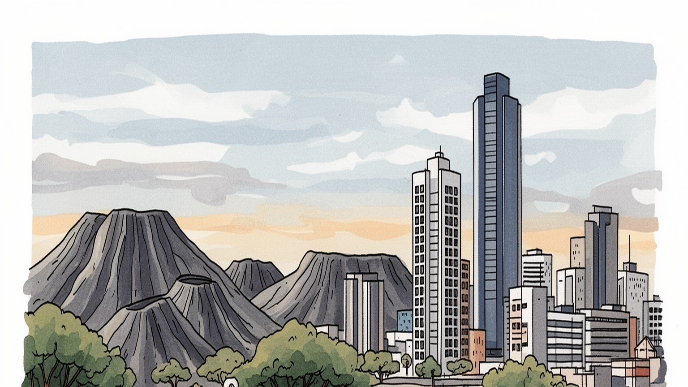
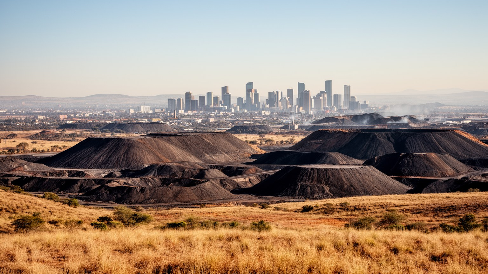
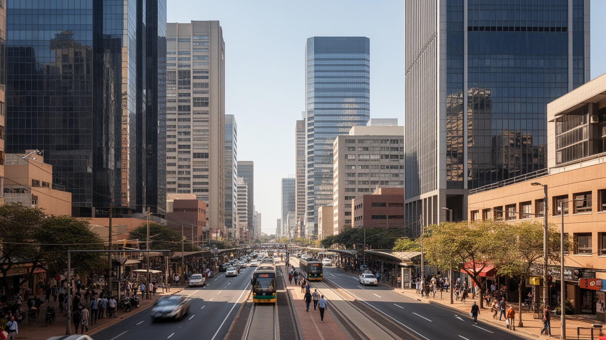
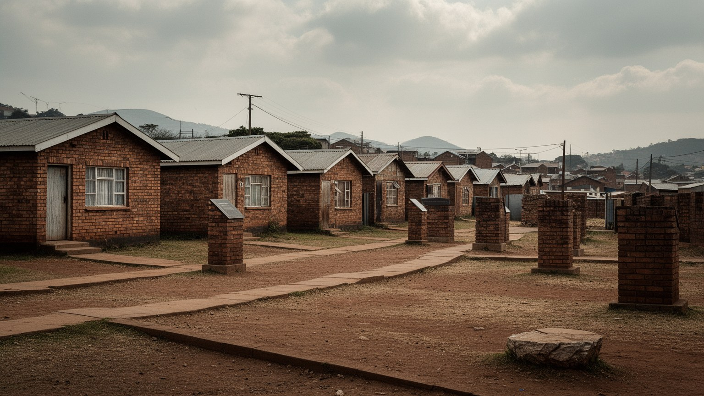
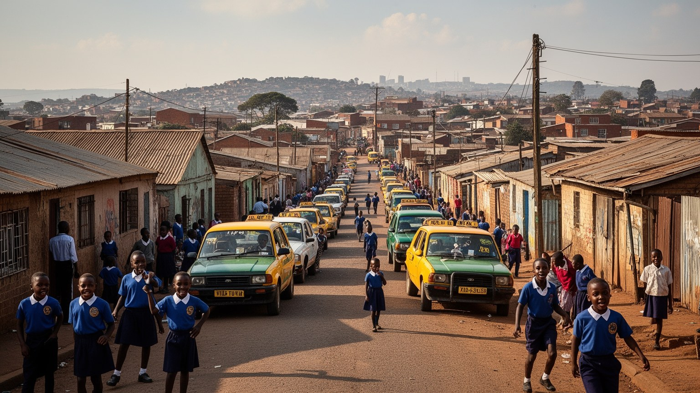
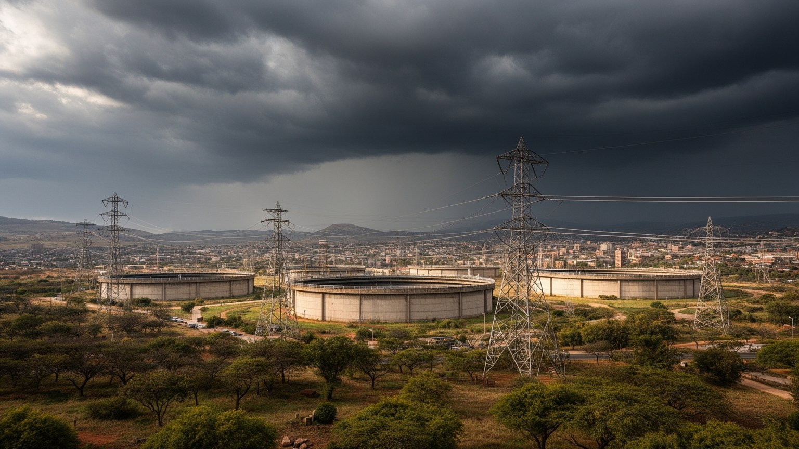
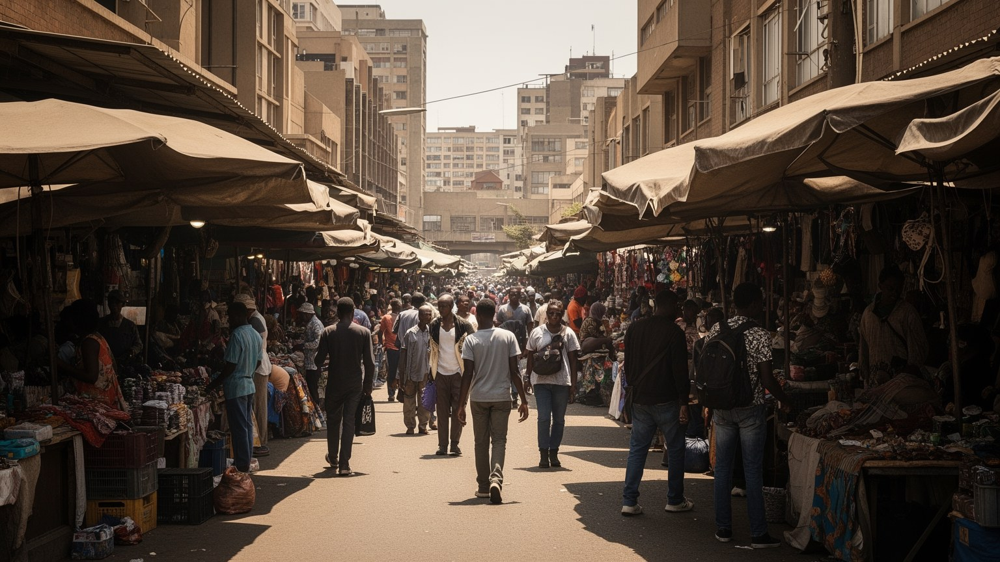
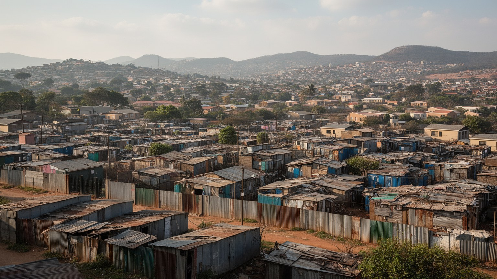
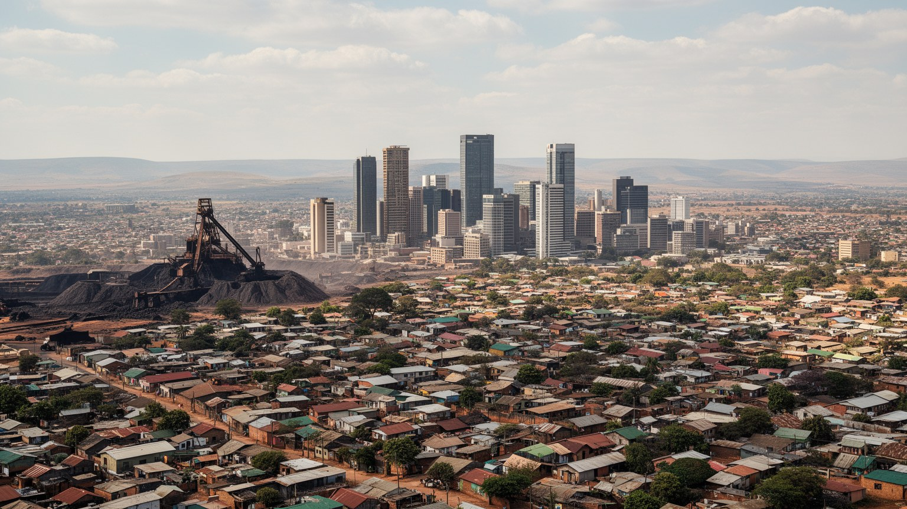

地政学
ヨハネスブルグは行政首都ではありませんが、南ア経済の意思決定を集める内陸都市です。鉱山資本、金融市場、物流、移民の結節点として、プレトリア、港湾都市、周辺国を道路と航空でつなぎ、経済の重心を作ります。

🇿🇦 南アフリカ / アフリカ / World City Atlas
金鉱の町から南部アフリカ最大級の金融中枢へ変わった高原都市。鉱業、証券取引、移民、アパルトヘイトの記憶、タウンシップ、治安、住宅格差が同じ都市圏で絡み合います。
都市の骨格
ヨハネスブルグは港を持たない高原都市でありながら、鉱山資本、証券取引、道路物流、移民労働を束ねて南部アフリカの経済を動かしてきました。

ヨハネスブルグは行政首都ではありませんが、南ア経済の意思決定を集める内陸都市です。鉱山資本、金融市場、物流、移民の結節点として、プレトリア、港湾都市、周辺国を道路と航空でつなぎ、経済の重心を作ります。
金鉱で始まった都市は、証券取引、銀行、保険、鉱業本社、物流、製造、映画、広告、大学雇用へ広がりました。警備、清掃、建設、運転、家事労働、露店、倉庫作業も都市を支え、所得差と通勤距離が働く条件を左右します。
ズールー、ソト、ツワナ、英語、アフリカーンス語、移民の言語が混じり、教会、モスク、伝統儀礼、クラブ、劇場、音楽、文学が地区ごとに息づきます。アパルトヘイトの記憶と新しい移民文化が同じ街路に現れます。
ソウェト、アパルトヘイト博物館、マーケット、ギャラリー、ライブ音楽は入口です。一方で住民には治安、長い通勤、住宅不足、停電、失業、空間分断が課題です。観光の明るさと暮らしの緊張を同時に読む都市です。

ヨハネスブルグは海や大河の港から生まれた都市ではなく、ウィットウォーターズランドの金鉱脈から急速に立ち上がった内陸都市です。標高の高い草原に採掘キャンプ、労働者宿舎、鉄道、精錬、商店、行政が集まり、短期間で南アフリカ経済の重心になりました。鉱山は地上の景観にも地下の記憶にも残り、尾鉱の丘、古い立坑、酸性鉱山排水、地盤沈下、鉱山会社の土地所有が都市の発展を制約しています。金は富を生みましたが、その富は移民労働、隔離された宿舎、危険な作業、病気、家族から離れた生活の上に築かれました。現在の中心業務地区や郊外のオフィスは、鉱業資本が集めた金融と法務の制度を引き継いでいます。ヨハネスブルグを読むには、輝く高層ビルだけでなく、鉱山跡、労働者の移動、環境汚染、鉱山閉鎖後の土地利用を見る必要があります。金鉱は過去の産業ではなく、都市の土地、格差、企業文化、労働観を今も形作る基盤です。採掘の利益が郊外の資産へ変わる一方、採掘の負担は周縁の地域に残りやすいことも、この都市の歴史的な不均衡を示しています。さらに、鉱山都市として急造された街路は、計画的な公共空間より企業の敷地と輸送効率を優先しがちでした。そのため、後の住宅政策や再開発も、既存の土地所有と環境負債を避けて進むことが多く、都市の分断を解くには地下の歴史まで読み直す必要があります。

ヨハネスブルグの経済力は、鉱山から金融、保険、法律、監査、通信、広告へ広がりました。証券取引所、大銀行、鉱業会社、保険会社、専門サービス企業は、南アフリカだけでなく周辺国への投資判断にも影響します。かつての中心業務地区は商業と交通の要でしたが、企業本社の多くは治安や駐車場、再開発の条件を理由にサントン、ローズバンク、メルローズなど北部のオフィス集積へ移りました。この移動は単なる不動産の変化ではなく、資本がより管理しやすい空間へ退いた歴史でもあります。高級モール、ホテル、会議場、警備の強いオフィスは国際ビジネスの顔になりますが、そこで働く清掃員、警備員、飲食店員、運転手は遠い住宅地から長く通います。金融都市としてのヨハネスブルグを読むには、取引額やビルの高さだけでなく、資本の移動が旧市街の空室、公共交通、路上商売、住宅市場へどう影響したかを見る必要があります。経済中枢が北へ動いたことで都市は多中心化し、機会も分散しましたが、移動できる企業と取り残される住民の差も大きくなりました。企業の集中は雇用を生む一方、公共空間を閉じ、都市を警備された島の連なりへ変える危うさを持っています。加えて、企業本社の判断は鉱山町、港湾、農業地域、隣国の雇用にも波及します。会議室で決まる投資や撤退は、遠い現場の賃金、地域財政、家族の送金にまで届くため、金融街は抽象的な数字だけでなく広域の生活を左右する場所です。

ヨハネスブルグの空間は、アパルトヘイトの制度によって深く刻まれています。人種別居住、パス法、強制移住、労働統制は、誰が中心に近く住めるか、誰が鉱山や工場で働くか、誰が良い学校や病院へ届くかを決めました。アパルトヘイト博物館、コンスティテューション・ヒル、旧刑務所、ソウェトの記念地は、国家暴力と抵抗の歴史を伝えますが、記憶は展示施設だけに閉じません。道路の距離、住宅地の価格、学校の質、警察への信頼、公共交通の弱さとして、過去の制度は現在の生活に残っています。民主化後の南アフリカは法的な平等を得ましたが、資産形成の差と空間分断は簡単には消えませんでした。ヨハネスブルグを読むには、ネルソン・マンデラや抵抗運動の象徴だけでなく、家族がどこからどこへ移されたのか、通勤に何時間かかるのか、誰が都心の再開発から利益を得るのかを見なければなりません。記憶を観光として消費するだけでは、都市の不公平を理解したことにはなりません。過去の暴力を思い出すことは、住宅、教育、治安、雇用をどう直すかという現在の政策課題と結びついています。記念施設の静かな展示の外で、都市はまだ和解の実務を続けています。記憶の場所では、犠牲者の名前や裁判の記録だけでなく、近所の分断、家族写真、失われた学校、労働許可証のような小さな証拠も重要です。制度が人の時間と移動をどのように奪ったかを細部から読むことで、現在の不平等が偶然ではないことが分かります。

ソウェトはヨハネスブルグを理解するうえで欠かせない都市空間です。単なる周縁の住宅地ではなく、アパルトヘイトへの抵抗、学生運動、教会、音楽、家族生活、スポーツ、起業が重なった巨大な生活圏です。ヴィラカジ通りやヘクター・ピーターソン記念館は訪問者に歴史を伝えますが、ソウェトの日常は観光名所だけでは説明できません。学校、診療所、教会、酒場、タクシー乗り場、屋台、住宅の増改築、小さな工場、若者の音楽スタジオが、住民の生活を支えています。タウンシップには強い共同体と文化的な創造力がありますが、失業、過密、公共サービスの不足、治安、通勤費、停電、若者の機会不足も深刻です。観光が増えると地域経済に収入が入る一方、貧困を見せ物にする危険もあります。ソウェトを読むには、抵抗の記念地、住民の誇り、生活インフラ、土地と住宅の権利を同時に見る必要があります。中心部やサントンで働く多くの人にとって、タウンシップは眠る場所であるだけでなく、家族、信仰、言語、政治意識を育てる場所です。ヨハネスブルグの力は、金融街だけでなく、こうした広い生活圏が毎日都市を支えていることにあります。週末のサッカー、葬儀、教会、結婚式、コミュニティの貯蓄組合は、統計に出にくい安全網です。公的サービスが不足する場所ほど、近隣の助け合いと小さな商売が生活を支えますが、それに頼りすぎることは行政の責任を軽くしてよいという意味ではありません。
ヨハネスブルグの交通は、都市の広がりと格差をそのまま映します。内陸の自動車都市として高速道路と幹線道路が発達し、郊外のオフィス、モール、住宅地、工業地帯を結んでいます。自家用車を持つ人には移動の自由がありますが、持たない人はミニバスタクシー、バス、メトロレール、徒歩を組み合わせて長い通勤をこなします。ハウトレインは空港、サントン、ローズバンク、プレトリア方面を結ぶ高品質な鉄道ですが、料金や駅の配置から全住民の移動を支える万能の交通ではありません。通勤の不安定さは仕事の遅刻、教育機会、医療アクセス、夜間の安全に直結します。アパルトヘイト期の居住分離によって、働く場所と住む場所が遠く離れた構造は今も残ります。ヨハネスブルグを読むには、立派な高速道路だけでなく、早朝のタクシーランク、乗り継ぎ待ち、歩道の不足、夜勤者の帰路、交通費が家計に占める重さを見る必要があります。交通政策は便利さの問題ではなく、都市の機会へ誰が届けるかを決める公平性の問題です。公共交通が信頼できなければ、低所得者ほど時間と収入を失い、企業も労働者の疲労に依存することになります。移動の改善は住宅、雇用、治安、気候対策と切り離せません。歩道、照明、乗り場の安全、運賃の透明性、鉄道の信頼性は、小さく見えて生活の尊厳を支えます。移動の負担が軽くなれば、家族と過ごす時間、学び直し、地域活動にも余白が戻ります。

ヨハネスブルグでは治安が都市経験を大きく左右します。強盗、車上荒らし、住宅侵入、詐欺への不安は、住む場所、移動手段、働く時間、子どもの通学、観光客の動線を変えます。その結果、高い塀、電気柵、ゲーテッドコミュニティ、警備員、監視カメラ、車での移動、管理されたモールが日常風景になりました。こうした対策は個人の安全を守りますが、街路や公園を共有する力を弱め、豊かな人ほど閉じた安全を買える構造も生みます。一方で、旧市街の一部やマーケット、アート地区、大学周辺では、歩いて使える公共空間を取り戻す試みも続いています。治安の問題は犯罪統計だけでなく、失業、住宅不足、薬物、警察への信頼、街路照明、公共交通、若者の機会と結びついています。ヨハネスブルグを読むには、危険な都市という単純な印象で止まらず、誰がどの安全を買え、誰が危険な時間帯に働き、どの地区で公共空間が修復されているかを見る必要があります。安全は門の内側だけで完結しません。路上商人、通勤者、子ども、高齢者、移民が安心して移動できる街路を増やせるかが、都市の成熟を測る尺度になります。治安対策が都市を細かく分断しすぎれば、信頼の回復はさらに難しくなります。公共空間に人の目と活動が戻ることは、警備だけでは作れない安全を生みます。市場、図書館、公園、駅前、学校周辺を使いやすく保つことは、犯罪対策であると同時に都市を共有する訓練でもあります。

ヨハネスブルグは、南アフリカ国内の農村や他州からだけでなく、ジンバブエ、モザンビーク、レソト、マラウイ、ナイジェリア、コンゴ民主共和国、エチオピア、ソマリアなどから人を集めてきました。鉱山労働、建設、商業、家事労働、大学、亡命、起業、芸術活動が移動の理由になります。ヒルブロウ、イェオヴィル、メイフェア、フォーズバーグ、ニュータウン、マボネングのような地区には、言語、食材店、礼拝所、音楽、髪結い、送金、路上商売が重なります。移民は都市の活力を作りますが、在留資格、住居、警察対応、外国人嫌悪、暴力、低賃金の問題にも直面します。文化面では、ジャズ、クワイト、ハウス、ヒップホップ、演劇、文学、映画、ファッションが、タウンシップと中心部、移民コミュニティ、オンライン配信を行き来しています。ヨハネスブルグの多文化性は、国際会議場の言葉だけでなく、バス停の会話、教会の合唱、モスクの食事、露店の香辛料、夜のクラブに現れます。移民を問題としてだけ見ると、都市を支える労働と創造力を見落とします。誰が歓迎され、誰が排除され、誰の店が街の安全網になるのかを見れば、この都市の包摂の度合いが分かります。移動する人々の存在こそ、ヨハネスブルグを地域都市から大陸的な都市へ押し広げています。行政窓口、学校、病院、警察が多言語の現実に対応できるかも重要です。言葉の壁を越えられなければ、移民の才能は都市の力になる前に孤立へ追い込まれます。

ヨハネスブルグの住宅格差は、都市の地図を見ればすぐに分かります。サントンやローズバンクの近くには高級マンション、警備された戸建て、オフィス、学校、モールが集まり、アレクサンドラ、ソウェト、オレンジファーム、インフォーマル居住地では過密、インフラ不足、失業、火災や洪水への脆弱さが続きます。アパルトヘイト後に黒人中間層の郊外移動は進みましたが、中心に近い土地と良いサービスへのアクセスは依然として大きな差を持ちます。住宅は単に屋根の問題ではなく、学校、仕事、病院、買い物、治安、公共交通へ届く距離の問題です。旧市街の空きビルには低所得者や移民が住み、管理不全や過密が社会問題になりますが、同時に中心部に近い住まいを求める切実な選択でもあります。再開発が進むと、建物はきれいになっても家賃が上がり、住民が遠くへ押し出されることがあります。ヨハネスブルグを読むには、豪華な住宅地とタウンシップを対立する風景として眺めるだけでなく、清掃員や警備員がどこに住み、どれだけ移動し、子どもがどの学校へ通うかを見る必要があります。住宅の場所は都市への参加権を決めます。近くに住める人と遠くに住まざるを得ない人の差が、時間、健康、教育、将来の資産形成を分けています。電力や水道の不安定さ、断熱の弱い住まい、雨季の浸水は、所得の低い世帯ほど重く受け止めます。住宅政策は戸数を増やすだけでなく、都市の中心に近い場所で安全に暮らせる選択肢を広げる必要があります。
ヨハネスブルグ観光は、自然の絶景よりも都市の歴史と現在を歩く体験に強みがあります。アパルトヘイト博物館、コンスティテューション・ヒル、ソウェト、マンデラゆかりの場所、ニュータウンの文化施設、マーケット、ギャラリー、サントンのビジネス地区、近郊の人類化石遺跡群は、それぞれ違う時代の都市を見せます。訪問者は、金鉱の急成長、隔離政策、民主化、現代の金融、移民文化を短い距離でたどることができます。ただし、治安への不安から観光は車やガイドに依存しやすく、歩いて偶然出会う都市経験は限られがちです。観光産業はガイド、運転手、博物館、飲食店、手工芸、宿泊に収入を生みますが、貧困やタウンシップを見せるツアーには倫理的な注意が必要です。ヨハネスブルグを訪れることは、苦難の歴史を短い物語にまとめることではありません。誰が語り手になり、収入が地域へ戻り、住民の尊厳が守られるかを意識する必要があります。観光の価値は、危険を避けて名所を消費するだけでなく、都市の記憶と生活の複雑さを理解する入口を作ることにあります。見学後に残る問いが、鉱山、金融、住宅、治安、移民の問題へつながるなら、この都市の観光は学びの力を持ちます。ガイドの説明、博物館の展示、移動中に見える街路を切り離さず、同じ都市の層として受け止めることが大切です。安全に配慮しながらも、管理された窓越しだけで終わらない見方が求められます。

ヨハネスブルグを世界都市として読む理由は、経済規模だけではありません。金鉱が作った資本、金融市場、サントンの本社機能、ソウェトの抵抗の記憶、タウンシップの生活、旧市街の再開発、移民の商業、治安への不安、住宅格差が、同じ都市圏で互いに結びついているからです。行政首都ではなく港も持たないのに、南部アフリカの資金、人材、商品、文化を集める力を持つ点に、この都市の独自性があります。高層ビルと尾鉱の丘、警備されたモールと路上商売、記念館と通勤タクシー、国際企業とインフォーマルな住まいを同じ地図に置くと、ヨハネスブルグの強さと傷が見えてきます。都市の成功は、金融街の成長だけで測れません。鉱山労働の記憶をどう扱うか、タウンシップの若者に機会を作れるか、移民を排除せず都市の力にできるか、公共交通と住宅で距離の不公平を縮められるかが問われます。治安を理由に都市が閉じた空間へ分かれすぎれば、共通の公共性は弱くなります。それでもヨハネスブルグは、困難の中で音楽、商売、政治、家族、信仰を作り続ける都市です。金の都市という古い呼び名の奥には、労働と移動と記憶を抱えながら新しい公平性を探す大都市の姿があります。大陸各地から来た人々が働き、送金し、学び、店を開き、表現を生むことで、都市は常に作り替えられています。だから評価すべきなのは富の集積だけでなく、その富が住まい、安全、教育、公共空間へ戻る仕組みを持てるかです。